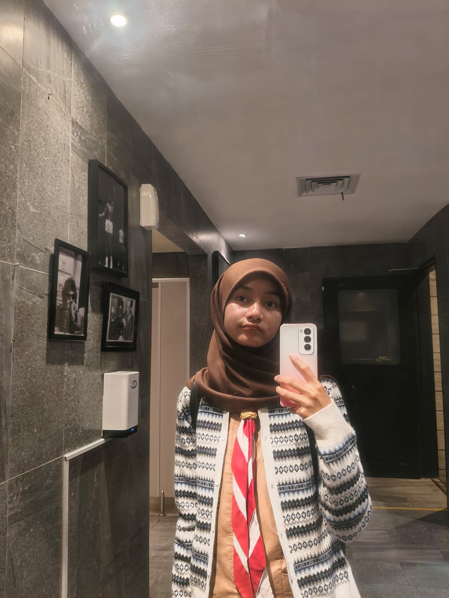

Praktikum Jaringan
Kegiatan melakukan simulasi perakitan dan konfigurasi jaringan kabel UTP di lab sekolah.

| Nama Lengkap | Syifanna Dea Arrahma |
|---|---|
| Status | Siswa Kelas XII - Peminatan Informatika |
| Pendidikan | SMA Negeri 2 MOJOKERTO |
| Minat Studi | Teknik Informatika, Sistem Informasi, & Internet of Things |
| Fokus Pembelajaran | Web Development, Computer Networking, Embedded Systems |
Kegiatan melakukan simulasi perakitan dan konfigurasi jaringan kabel UTP di lab sekolah.

Uji coba penyambungan komponen sensor DHT11 dan layar LCD I2C ke board Arduino.

Sesi diskusi dan pengerjaan tugas kelompok proyek pemrograman Informatika.